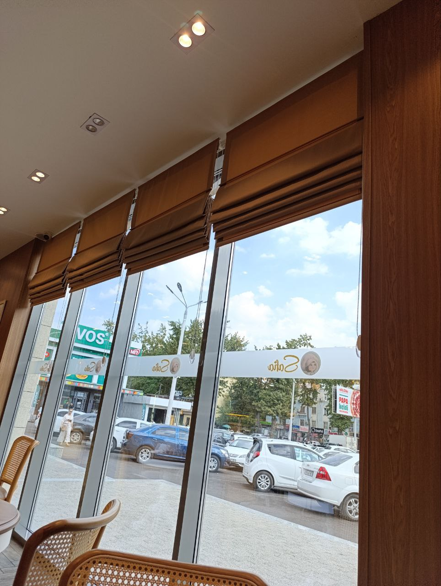
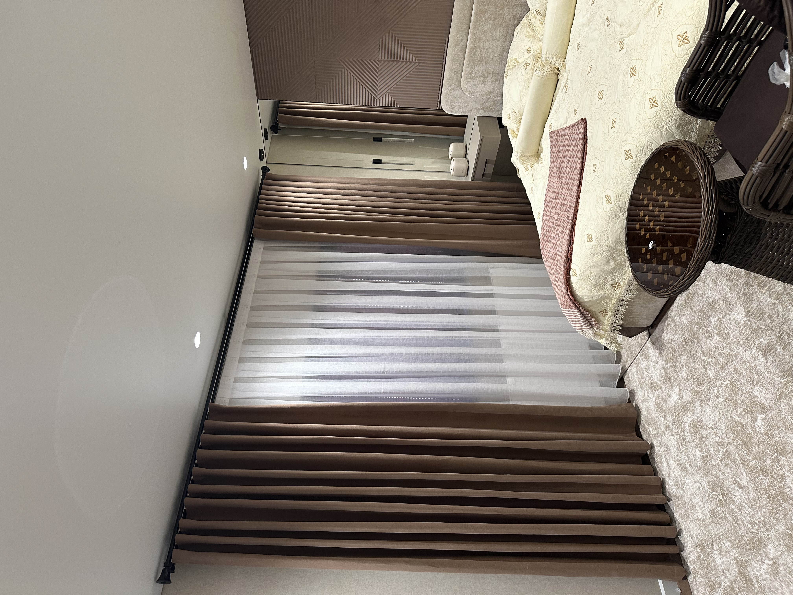
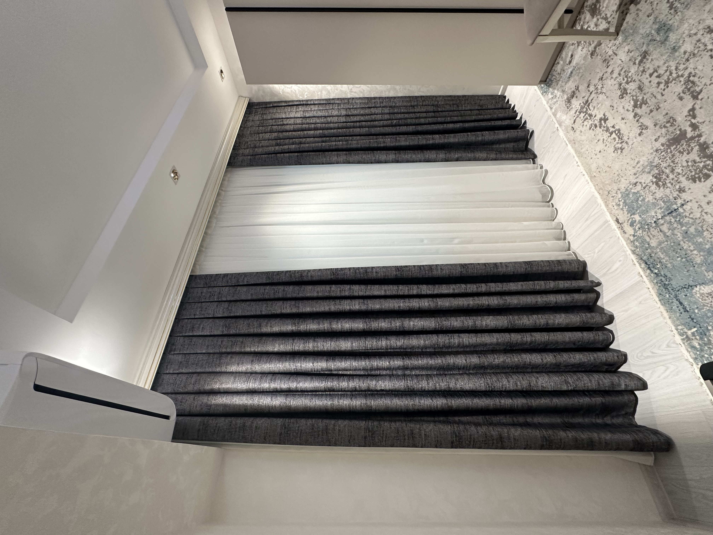
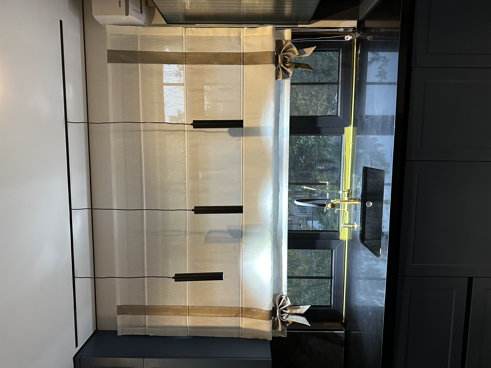
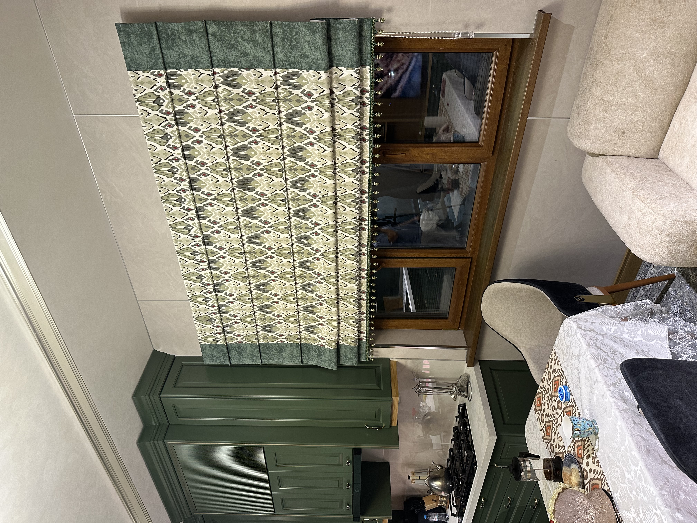
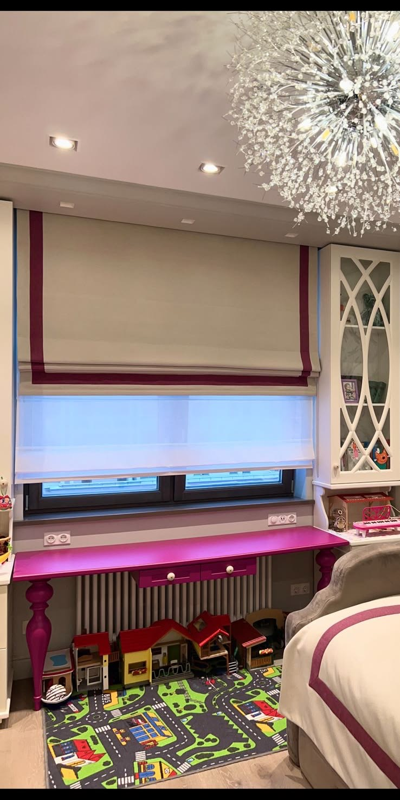
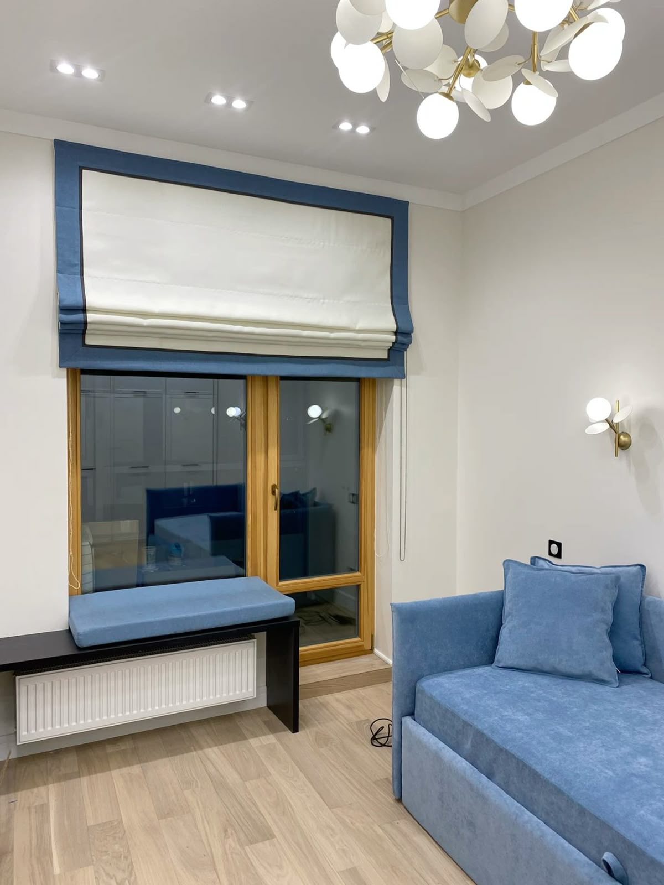
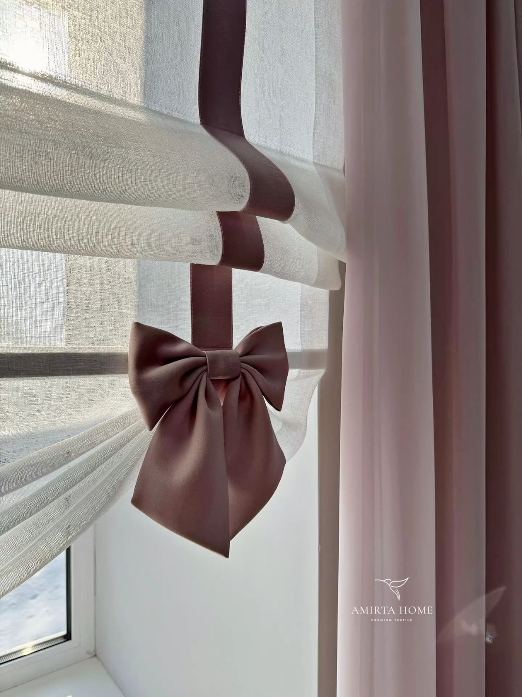
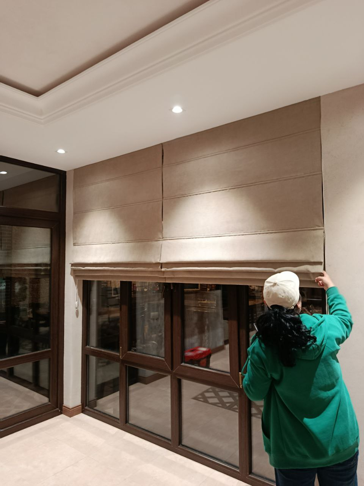
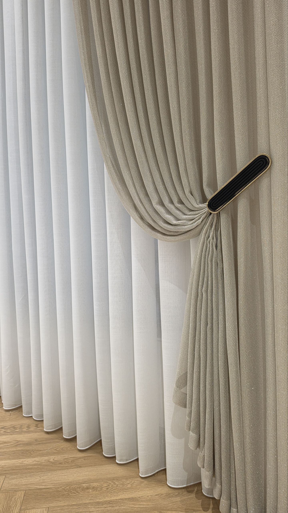

Римские шторы
Стиль и удобство
Создаём уют с помощью штор, римских штор и жалюзи. Подберём ткань под ваш интерьер, изготовим по размерам и аккуратно установим.
Заказать бесплатный замер →Посмотреть наши работы →

Стиль и удобство

Мягкость и уют

Минимализм и практичность
Также предлагаем жалюзи День-Ночь, плиссе, горизонтальные жалюзи и электрокарнизы. Стоимость рассчитывается индивидуально после выбора ткани и размеров.






Помогаем подобрать оттенок, фактуру и конструкцию под интерьер.
Выезжаем на замер и учитываем особенности каждого окна.
От выбора ткани до финальной установки — сопровождаем ваш заказ.
Напишите нам — поможем выбрать подходящий вариант и договоримся о бесплатном замере в Ташкенте.
Telegram →+998 97 781 81 88